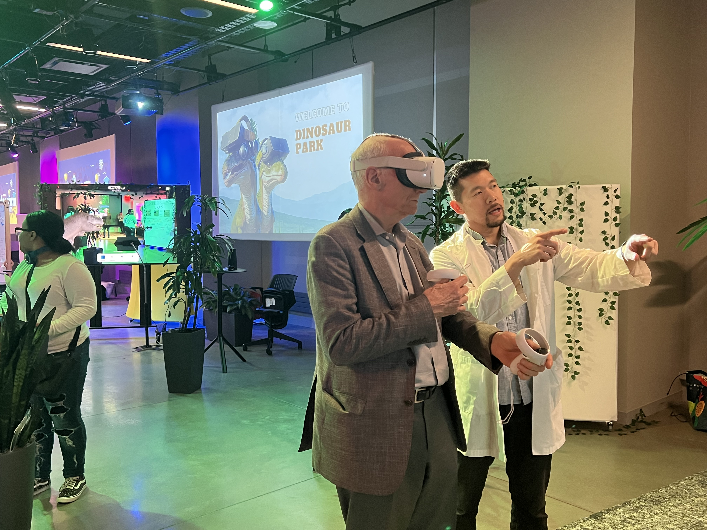
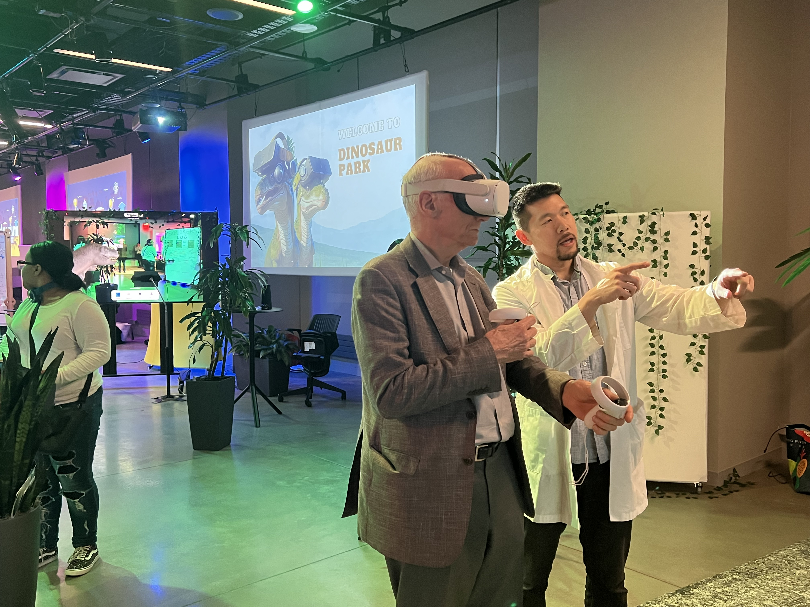

Multicultural Math Spaces
An interactive experience featuring a gallery walkthrough,
sidewalk math, and number systems.
Station Preview
Multicultural Math Gallery Walkthrough will feature an array of Multicultural MathSpaces and mathematicians from underrepresented demographics.
This curation was hand selected by our students in the Program of Mathematics Education at Teachers College.
The mathematical spaces featured were selected for their design that can simulate effective education of a multicultural student body. We define MathSpaces as any space, physical or virtual, where mathematics learning, socialization, and/or identity development occurs.
Join us for an engaging gallery walk-through and see some of our favorite mathematicians and what a Multicultural MathSpace can look like. Note among our featured mathematicians are mathematicians showcased in the popular film Hidden Figures.
Link to virtual Multicultural MathSpaces event from Fall 2020.
Sidewalk Math is about bringing the fun play of sidewalk chalk art to cultivating an inclusive MathSpace for all. Sidewalk Math is a powerful space that stimulates wonder, meaningful hands on learning, and engagement across all ages. Sidewalk Math is great for mathematics learning and community building. It is trending as an affordable, creative, and inspiring interactive space that can happen at your front steps. The wider mathematics education community has been engaging with #sidewalkmath, and we would love you to join us and play!
Link to our virtual sidewalk math stations from 2020

Numeral Systems are richly connected to the culture of a people. Come play with these fun cootie catchers featuring several numeral systems. The art of folding papers is known as origami. Origami has a rich history in solving many important mathematical questions.
Meet your Hosts:
Shalom, I am Dr. Rochy Flint, Lecturer of Mathematics at Teachers College. I am passionate about creating and featuring collaborative interactive mathematical spaces.
Hi! I'm Baldwin, a third-year doctoral student in the Mathematics Education program. I enjoy learning about new technologies and considering how they can be incorporated into the mathematics classroom.
Hi, I’m Nasriah! I’m a third-year doctoral student in the Mathematics Education program, and also a middle and high school math teacher. I am passionate about issues of equity and access in mathematics education, and also the Golden State Warriors.
My name is Novia Anditya. I am a second-year MS student in the Mathematics Education program at TC. I am from Indonesia. NYC has many good restaurants, and I am lucky to have found some good spots for my favorite dishes; pho, dried hot pot, and ramen!

Hello, Ni Hao, Bonjour! My name is Siyu Liu and I am a first-year student in MS mathematics education program. Two facts about me: 1. I never go anywhere without taking my teddy bears because they are my siblings :)
2. I enjoy creative activities and exploring new things. I hope we’ll have a nice shared experience!
My name is Katie Duggan. I am a second year student in the MS Mathematics Education program and a high school math teacher at Manhattan Center for Science and Mathematics. I am passionate about making mathematics accessible and enjoyable for all students.
Hi, I'm Chamarra Coward, a second year doctoral student in the Mathematics Education program and a full-time high school math teacher. I am passionate about the interdisciplinary relationship between mathematics and art as well as supporting underrepresented minority students' interests in STEM fields/careers.
Hi, I am Xinge (Cindy) Zhang, a second-year doctoral student in the Mathematics Education program. I have a huge passion for teaching mathematics and exploring the connection between mathematics and technology.

 
